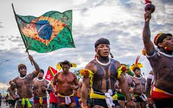
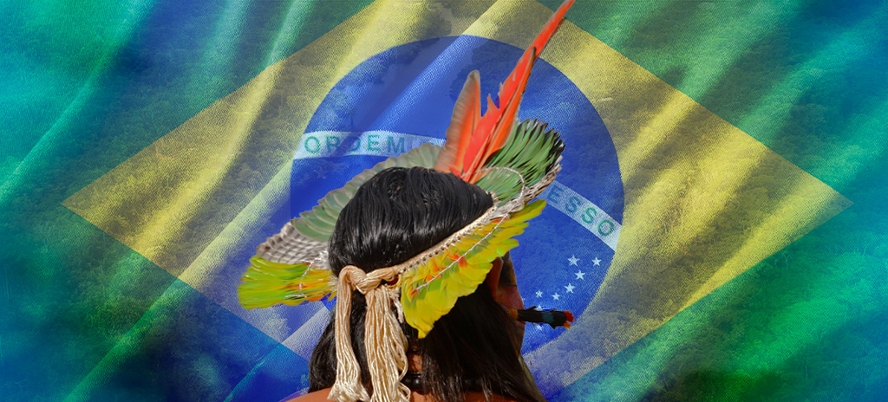

<!DOCTYPE html>
<html lang="en">
<head>
    <meta charset="UTF-8">
    <meta http-equiv="X-UA-Compatible" content="IE=edge">
    <meta name="viewport" content="width=device-width, initial-scale=1.0">
    <title>povos indígenas do brasil</title>
    <link rel="stylesheet" href="style.css">
</head>
<body>
   
</body>
</html>
<p>cultura dos povos índigenas</p>

<h2 class="texto-1">A importancia da população indígenas</h2>

<p class="">"Os povos indígenas do Brasil são os habitantes originários do território brasileiro e estavam presentes aqui antes da chegada dos europeus no final do século XV. Existe uma grande diversidade de povos indígenas no Brasil, e a população de indígenas, segundo critérios do Censo de 2022, é de aproximadamente 1,6 milhão. Atualmente, ainda existem uma série de obstáculos na vida dos povos indígenas do Brasil, como a demora na demarcação das terras indígenas e o desrespeito a essas demarcações por garimpeiros e madeireiros, que invadem ilegalmente essas terras." </p>

<h2 class="texto-dois">
    A população indígena é importante para o Brasil por vários motivos, incluindo a preservação ambiental, a construção da identidade nacional e a diversidade cultural. </h2>

    
    